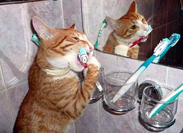

The ranges of calories per pound of cat vary greatly: the guidelines range from 15 calories per pound of body weight for inactive indoor-only sterilized cats to 35 calories per pound for active cats. Outdoor cats may need up to 50 calories per pound. The “average” cat needs about 20 calories per pound.Canned foods typically range from 180-220 calories per 5.5 ounce can; dry foods are often calorie-dense, ranging from 300-500 calories per cup. When eating canned food, the average adult cat usually needs about one 5.5 ounce can of food per day.
Based on the list of ingredients, look for canned foods that
Start by gently massaging the cat's gums and teeth with your fingers. Repeat this for several short sessions for several days. Try to pick out times when your cat is calm and praise her every time and even give her treats. Your aim is to create a positive association with the procedure of having her gums and teeth touched. When your cat accepts these sessions with ease, try to introduce the brush. Remember to use only a toothbrush designed for cats or something as gentle as gauze. Again, make sessions short and enjoyable and stop just before your cat becomes uncomfortable. At this stage, you can also introduce the paste. Make sure that it's a flavor that Kitty likes.
Source: The Official Cat Site